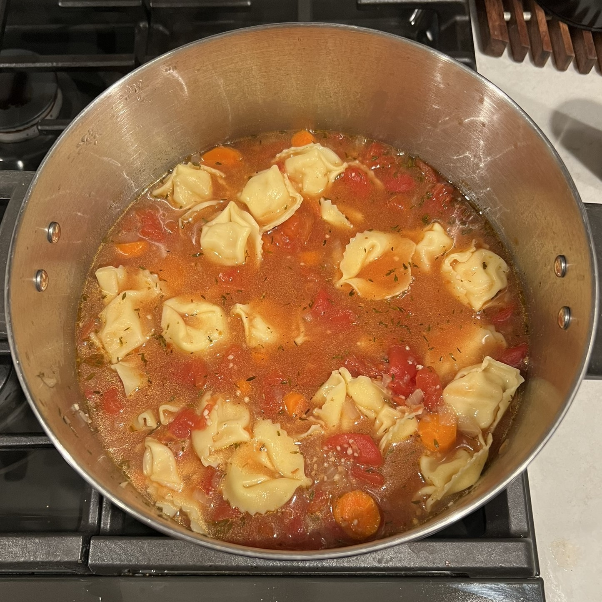

Tortellini Soup

Ingredients
- 2 Tbsp olive oil
- 1 medium yellow onion, diced
- 2 large carrots, cut into 1/4 in slices
- 1/2 tsp salt, plus more to taste
- Freshly ground black pepper to taste
- 2 tsp balsamic vinegar
- 2 garlic cloves, minced
- 1 28 oz can diced tomatoes
- 3 1/2 cups vegetable broth
- 1 Tbsp fresh thyme leaves
- 1/2 tsp red pepper flakes
- 9-12 oz cheese tortellini
Instructions
- Heat the olive oil in a large pan over medium heat. Add onion, carrots, salt and a few grinds of pepper. Cook, stirring, until vegetables begin to soften, about 8 minutes.
- Add balsamic vinegar, garlic, tomatoes, broth, thyme and red pepper flakes. Cover and simmer for 30 minutes.
- Meanwhile, cook the tortellini in a pot of boiling water according to the package directions until al dente.
- Add tortellini to soup and simmer for 2 more minutes.
- Season to taste with more salt and pepper and serve.